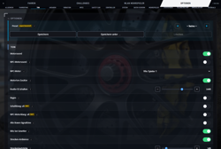

OmegaSim Wiki – die Idee dazu stammt von Gnen54. Hier stehen die offenen Artikel von Nutzer Luuke42 unter der Lizenz CC BY-SA 4.0.
Motorsound
Stand dieses Artikels: OmegaSim 1.2.50 vom 30.10.2026 · Firmware des Autos: nicht bekannt (OmegaSim liest die Firmware-Version nicht aus)
Dieser Text wurde mithilfe von KI erstellt (Claude) und ist nicht in jedem Punkt von Menschen geprüft. Fehler bitte direkt verbessern oder auf der Diskussionsseite melden, siehe Mitmachen. Die öffentliche Fassung auf luuke42.github.io/omegasim kann älter sein als der hier beschriebene Stand.


Der Motorsound von OmegaSim ist der Klang, den das Carrera HYBRID-Auto über die Web Audio API erzeugt, während es fährt. Er folgt der Drehzahl und dem Gas des Fahrzeugs und besteht aus mehreren nahtlos aneinandergereihten Drehzahlbändern. Es gibt zwei Wege, wie die Klänge entstehen: eine Synthese nach dem Modell von engine-sim und echte Aufnahmen. Beides wird in der App gleich abgespielt.
Auf einen Blick
| Merkmal | Wert |
|---|---|
| Menüpfad | Optionen → Ton → Motorsound-Profil; Motorwerkstatt für eigene Klänge |
| Motoren | 41 Profile (GT3, Formel 1, Tourenwagen, historische Rennwagen, Straßenklassiker, Aufnahmen) |
| Klangerzeugung | Synthese (engine-sim) und Aufnahmen; beides als Ogg-Drehzahlbänder |
| Werkzeug | Motorwerkstatt (Optionen → Ton): zwölf Regler, Drehzahl-Slider, drei Diagramme, „Als Profil übernehmen“ |
| Quelle | tools/engine_synth.py, tools/engine_fx.py, tools/engine_loops.py, src/80-sound.js, src/94-engine-workshop.js
|
Wie der Motorsound entsteht
Der Klang eines Motors ist kein einzelner Ton, sondern ein Zug von Zündimpulsen, die durch die Resonanz des Auspuffs geformt werden. Entscheidend ist dabei nicht die Tonhöhe, sondern das Muster der Zündung: Ein gleichmäßig zündender Reihen- oder Boxer-Sechser klingt wie ein glattes Kreischen, ein Cross-Plane-V8 zündet innerhalb jeder Bank ungleichmäßig – das ist das „Blubbern“, das man von amerikanischen V8 kennt.
Die Zündrate ist physikalisch bestimmt:
Zündrate [Hz] = Umdrehungen/min ÷ 60 × Zylinder ÷ 2
Für jede Drehzahl wird eine eigene Schleife gerechnet. Damit die Abspielrate nie mehr als eine Oktave streckt, baut die App eine Bandleiter aus den Ankern Leerlauf, Mitte, Vollgas und geometrischen Zwischenstufen. Jede Schleife ist ein ganzzahliges Vielfaches eines 720°-Arbeitszyklus und alle Filter sind zirkulär gefaltet – die Schleife ist also exakt periodisch und hat keine Naht.
Die verfügbaren Motoren
Unter Optionen → Ton → Motorsound-Profil (#sound-profile) stehen 41 Profile, gruppiert:
| Gruppe | Beispiele |
|---|---|
| GT3 / GT-Rennmotoren | Porsche 911 GT3 R (Boxer-6), BMW M4 GT3, Ford Mustang GT3 (Cross-Plane), Ferrari 296 GT3 (V6), Mercedes-AMG GT3, Corvette C6.R/C5-R, Corvette Z06 GT3.R, Aston Martin Vantage GT3, Huracan GT3/R8 LMS (V10) |
| Formel 1 | F1 2026 (1,6-l-V6 Turbo-Hybrid) |
| Langstrecken-Prototyp | Lister Storm LMP (Jaguar-V12) |
| Tourenwagen, DTM, NASCAR | Audi RS5 DTM 2019, Chevrolet Impala SS NASCAR |
| Historische Rennwagen | Ford GT40 Mk I, Lola T70 Mk3B, Ferrari 330 P4, Maserati MC12, Ford Capri Zakspeed, Porsche 935 K4 |
| Straßen- und Rallyeklassiker | Lamborghini Countach LP500, Subaru Impreza WRX STI 1999 |
| Amerikanische Straßenmotoren | Dodge Challenger SRT Demon, Ford Mustang 390 GT, Chevrolet Blazer 1990 |
| Alltagsklassiker vor 1970 | Ford Tudor Slantback 1937, VW Käfer 1300 |
| Speed Dreams (Aufnahmen) | sd_v8gt, sd_v10, sd_v8muscle, sd_v8alt, sd_v12, sd_toro, sd_v5r, sd_lynx, sd_fmc, sd_boxer |
| Aufnahmen des Nutzers | AMG GT3, Huracán GT3 Evo |
Jeder Motor führt sein eigenes Drehzahlband. Zum Beispiel dreht der Porsche 911 GT3 R von Leerlauf 1200 bis Begrenzer 8800 U/min, der Formel-1-Motor von 4200 bis 12500, und der Blazer von 650 bis 5000 – damit Anzeige und Ton dieselbe Drehzahl zeigen.
Beispielklänge
Zum Anhören liegen die fertigen Ogg-Dateien im audio/-Ordner der App:
- Drehzahlbänder eines Motors, z. B.
audio/p992gt3r_idle.ogg,p992gt3r_mid.ogg,p992gt3r_high.ogg(Leerlauf, Mitte, Vollgas) oderaudio/mustang_idle.ogg/_mid/_high(Cross-Plane-V8). - Beschleunigungs-Demo:
audio/p992gt3r_demo.ogg– ein voller Fahrzyklus mit Gangwechseln. - Motorstart:
audio/p992gt3r_start.ogg– Anlasser, Anspringen, Leerlauf. - Effekte:
audio/brake_squeal.ogg,audio/tyre_squeal.ogg,audio/crash_*.ogg,audio/shift_up/down.ogg,audio/pit_wrench.ogg.
Am besten hört man die Unterschiede aber in der Motorwerkstatt, wo man den Drehzahl-Slider zieht und den Motor bei jeder Drehzahl anhört.
Die Motorwerkstatt: das Drehzahl-Werkzeug
Unter Optionen → Ton → Motorwerkstatt läuft der komplette Synthese-Kern live im Browser. Jede Änderung ist sofort hörbar, ohne dass eine Datei entsteht.
Regler
Zwölf Regler und Auswahlen:
- Zylinder (3–12), Bauart (Reihe / V / Boxer), Kurbelwelle (gleichmäßig/Flat-Plane oder Cross-Plane)
- Drehzahl (
#mw-rpm, 700–18000, Schritt 50) – der Drehzahl-Regler - Primärrohr (6–60″), Impulslänge, Auspuffnachhall, Sättigung, Ventiltrieb, Zündstreuung, Ansauganteil, Last (Zug/Schub)
Anhören
Der Knopf Anhören rendert eine nahtlose Schleife bei der eingestellten Drehzahl und spielt sie in einer Schleife ab. Das Rendern läuft über einen OfflineAudioContext mit Faltungsnachhall, damit der Regler nicht hakt. Wird ein Regler bewegt, während eine Schleife läuft, wird automatisch neu gerendert – der Drehzahl-Regler wirkt also wie ein Rev-Regler, der den Motor bei der gewählten Drehzahl vorführt.
Diagramme
Drei Live-Diagramme aus demselben Modell:
- die Zündfolge über 720° (Bank A/B, Abstände in Grad),
- ein Zündimpuls mit Nachhall (roh grau, nach Rohr und Sättigung orange),
- die Resonanz des Rohrs (blaue Marke
c/(4L), rote Marke = Zündrate).
Als Profil übernehmen
Der Knopf Als Profil übernehmen rendert drei Bänder (Leerlauf, Mitte, Vollgas bei 30 %, 100 %, 175 % der Drehzahl) und fügt das Ergebnis als neues Profil in die Motorsound-Liste ein – der eigene Motor ist dann im Cockpit fahrbar. Daneben lassen sich Klänge in localStorage ablegen und als JSON exportieren/importieren.
Siehe auch
Quellen im Code
tools/engine_synth.py:CARS,synth_loop(),band_ladder(),cross_plane_v8(),main()tools/engine_fx.py:render_rpm_curve(),engine_start(),brake_squeal(),tyre_squeal(),crash()src/80-sound.js:loadEngineSamples(),startSampleEngineIn(),updateSampleEngineIn(),sampleWeights(),extrasWerte()src/94-engine-workshop.js:mwListen(),mwRender(),mwAdopt()audio/loops.json,audio/fx.json,audio/CREDITS.md
Weblinks
- Browserfassung, Android-App und Quellcode: Links auf der Hauptseite